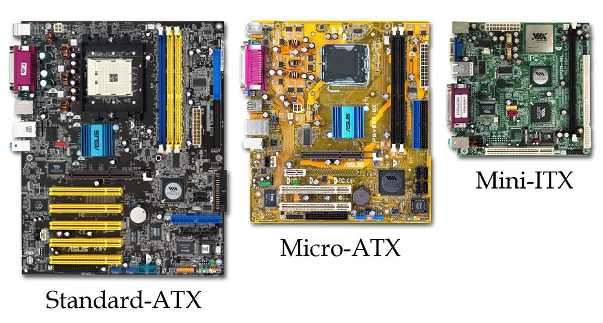
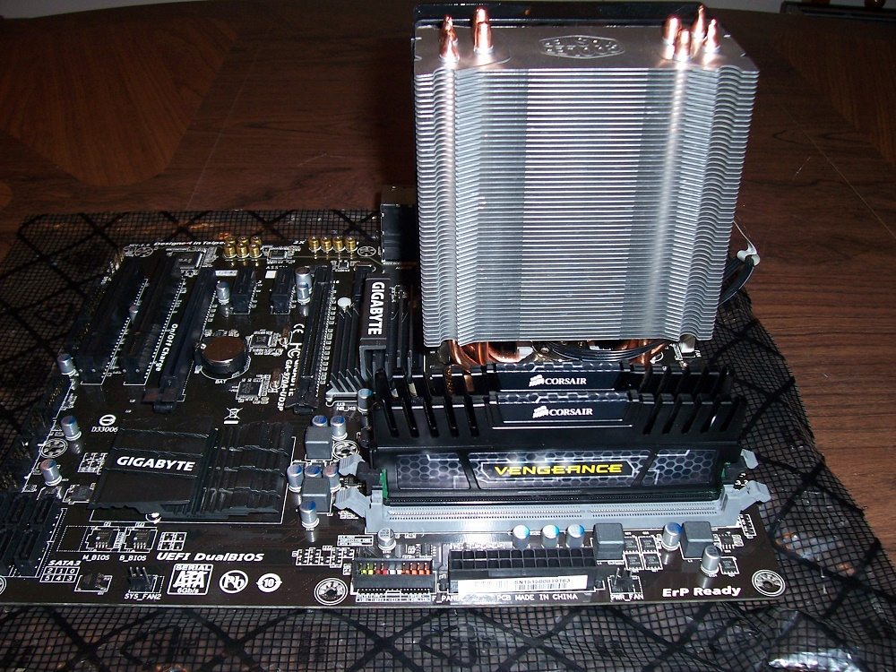
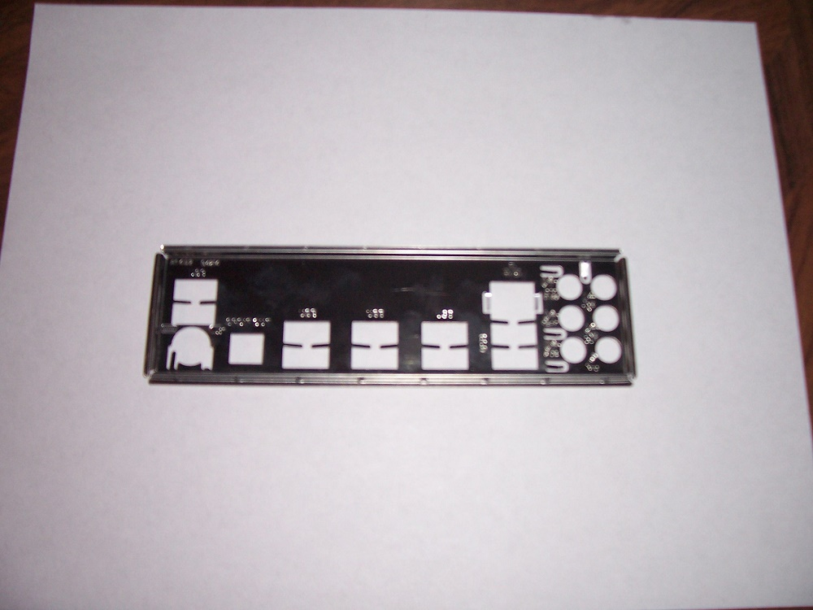
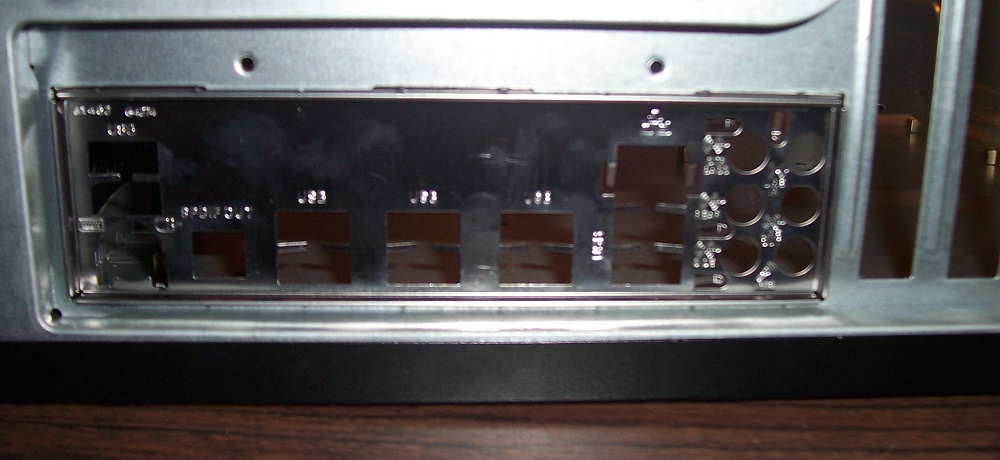
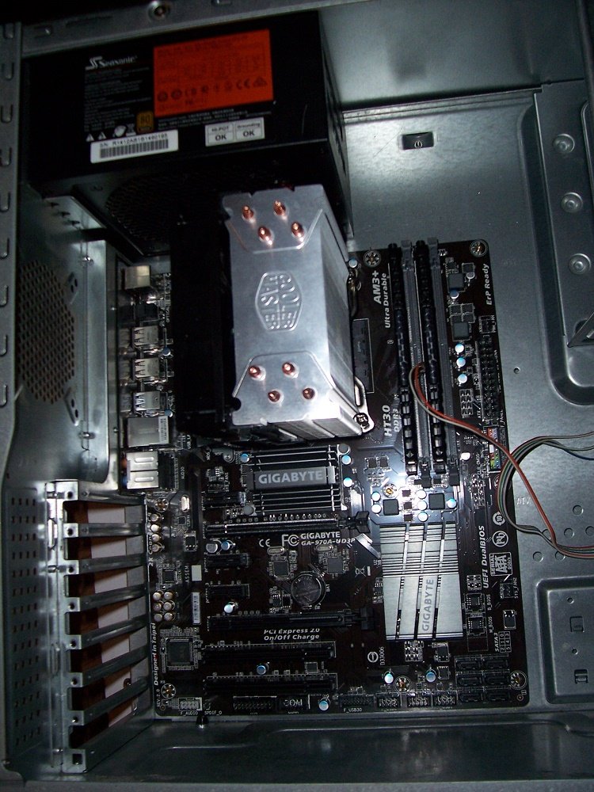

The motherboard is the core of the computer. It holds the basic startup program in a BIOS chip, and houses all the interconnects that allow the different components of a PC to communicate. It's the largest component, and all the other components will either plug directly into it via slots, or connect to it via plugs.
There are three commonly used sizes of motherboards: Full ATX, Micro ATX, and Mini ATX All three follow the same layout standard, sharing the same attach points for the case, slot locations for expansion cards, and power connections. The only difference is that a full tower ATX motherboard is longer than a micro ATX board, and has more expansion slots for things like sound/graphics cards, sata controllers, etc. Similarly, a mini ATX motherboard is, you guessed it, smaller than both full and micro sized ATX boards.

Before we start anything, make sure your mobo is size-compatible with your case. A full tower ATX case will hold a full size, micro, or mini ATX motherboard. A small mid tower case will usually be able to hold micro and mini ATX motherboards, but not a full size one. In other words, cases are compatible with whatever size ATX standard they're designed for, as well as all smaller sizes. They are NOT compatible with motherboard sizes larger than the ATX standard they use.
Lets get started. The motherboard in this example is a full sized ATX and we've already installed the CPU, ram, and heat-sink on it. Here it is again, just so we have a reference on the page.

Motherboards don't simply sit in the case and get screwed down, they have to be elevated above the sheet metal that makes up the back of the case. This is done using small adapters call "motherboard stand-offs", or just "stand-offs". These will most likely come pre-installed in any case you purchase, but you'll need to check just to be sure. If they aren't present, you'll have to purchase some and hand-screw them into the motherboard mounting holes. This is easy, just line up the stand-offs with the mounting holes in your motherboard and your ready to install.
Your motherboard has a rear panel where all the usb, audio, video, and other plugs are located. Since motherboards vary in the type, amount, and layout of these plugs, each motherboard comes with its own back plate, pictured below

This simply snaps into the large rectangular hole in the back of the case like so.

Our next step is to simply place the motherboard into the case, carefully matching the connectors to their holes in the back plate. Make sure that each of your mounting holes is positioned over a stand-off, then screw the motherboard down.

And there it is, the core of our machine with it's two main components, all installed. We're most of the way done now.
Now that the motherboard is in, lets plug something into it. Read on.
Homemade Logic
Matthew Buchanan